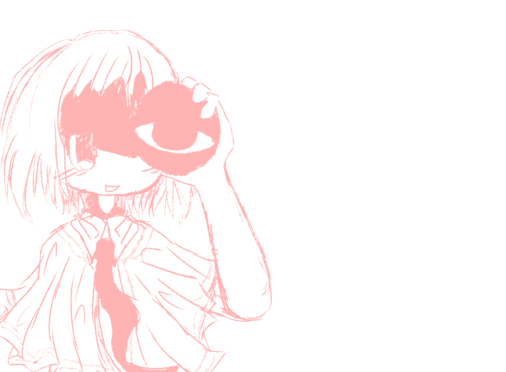

i generally do not agree with hatred for aspects humans have that they cannot control. i don't consider myself to be any sort of political affiliation, but i'd probably be left leaning in the sense that i just dont like inequity. despite this, i still have types of internet people i absolutely disagree with from all fronts...
i do not agree with and often despise people who have hatred for others for things they do not understand. dni lists are a plague among a lot of people around my age online. if you have one, and it has things on it like "die proshippers" or "die problematic media fans", then i do not want to be around you. i have too much experiences from being in that extremely moral part of the internet that i want nothing to do with it anymore. i am pro-whatever you want
not sure what else to write for this to be quite honest, i don't really want to spread a lot of negativity anyways, these are just some of my main thoughts floating around about what i believe in, i'll update this if i think of more i guess
